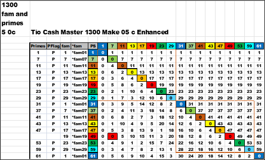
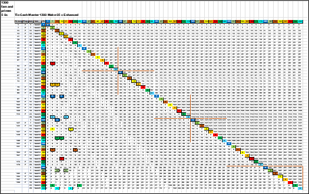

Back in "Chapter 0070 Find Mod And Make *fam"
was the MOD() function and a chart showing yellow painted cells.
After all the above arts and charts a clearer process is recognized.
With "just another thirty away" a better and more colorful chart can be created to show the solutions.
Close up view. Two groups (g) 0 and 1.
Here is a larger view of groups (g) 0 to 6. The colors of the PS and the *fam have been enhanced for ease of viewing. A new group (g) breaks on the cell color of blue background and white font. The red boxes are the stairsteps. The "Primes" and "PFlag" will be blank where there are factors. The zero cells on the diagonal are where a number is divisible by itself and *fam01. Finally , look at the diagonal together with the red box ; it forms a right triangle.
Back in section 0261 Tapestry Factors Big View was a large chart similar to the above chart. There appears to be a rail along the *fam07 line that all other larger *fam are less than. To the right there are no colored cells between the *fam07 and *fam01 lines. These were eliminated at the very beginning ( 2 , 3 , 5 , evens ).
A white row of cells has no factors and is therefore prime.
It is like a large "no-man "s land barren of any factors. It is a peculiar landscape.
And yet , there are telltale signs in what is missing.